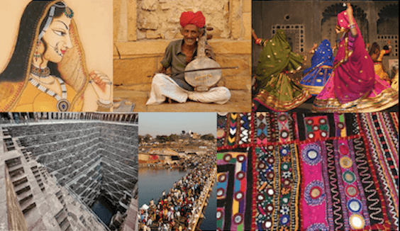
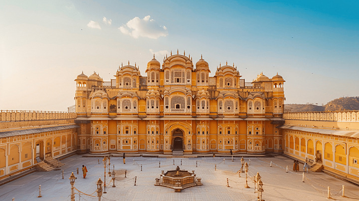

Discover the grandeur of Rajasthan's ancient forts, a testament to royal heritage.

Vibrant Festivals
Celebrate the colorful festivals that showcase the rich traditions of Rajasthan.

Traditional Dance & Music
Experience the rhythm and grace of Rajasthan's folk dances and music.
50+
Districts
250+
Forts
5+
rivers
10+
art forms
Frequently Asked Questions
The best time to visit Rajasthan is during the winter months, from October to March, when the weather is pleasant and ideal for sightseeing and exploring cultural attractions.
Rajasthan is home to several heritage sites, including the majestic forts of Amer, Jaisalmer, and Mehrangarh, the palaces of Udaipur and Jaipur, and the UNESCO World Heritage Site, Keoladeo National Park.
Some of the most popular festivals in Rajasthan include the Pushkar Camel Fair, Jaipur Literature Festival, Desert Festival in Jaisalmer, and the Teej Festival in Jaipur. These festivals offer a glimpse into Rajasthan's vibrant culture and traditions.
Rajasthan is known for its unique cuisine, including dishes like Dal Baati Churma, Gatte ki Sabzi, Laal Maas, Ker Sangri, and traditional sweets like Ghewar and Mawa Kachori.
Rajasthan is famous for its handicrafts such as block-printed textiles, blue pottery, traditional jewelry, leather goods, and intricately designed wooden furniture. Popular markets include Johari Bazaar in Jaipur and Sadar Bazaar in Jodhpur.